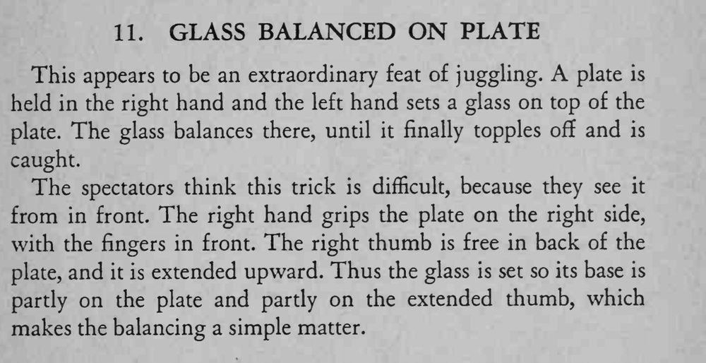

魔术师单手端盘，把玻璃杯立在盘沿上摇摇欲坠，最后杯子滑落又被接住。
拇指要竖稳，杯子重心的支撑点落在盘面与拇指之间，正面看才显得惊险。

This appears to be an extraordinary feat of juggling. plate is held in the right hand and the left hand sets a glass on top of the plate. The glass balances there, until it finally topples off and is caught. The spectators think this trick is difficult, because they see it from in front. The right hand grips the plate on the right side, with the fingers in front. The right thumb is free in back of the plate, and it is extended upward. Thus the glass is set so its base is partly on the plate and partly on the extended thumb, which makes the balancing a simple matter.